An Agent Skill that grounds GenAI, LLM, and agentic AI security guidance in this project's own published research — instead of a model's general, possibly stale, knowledge of the taxonomy.
Not a chatbot that re-explains the Top 10 — it's built for the workflow actions practitioners actually do, each one citing the specific category, control, or page it's grounded in.
Checks a design against the actual LLM Top 10 / Agentic Top 10 "Common Examples" and "Prevention" sections, citing the specific category per finding.
Looks up the exact control ID across 25 frameworks — NIST AI RMF, ISO 27001/42001, SOC 2, EU AI Act, FedRAMP, DORA, MITRE ATLAS.
control_id and tier.Uses the OWASP threat-modeling appendix for single-LLM apps, or the MAS threat-modeling guide for multi-agent systems.
Uses the COMPASS RunBook and its companion spreadsheet as the actual assessment framework.
Grounds evaluations in the real MCP security guides and red-teaming vendor evaluation criteria.
Matches observed behavior to the correct Top 10 category — and says plainly when IR process guidance needs to be fetched live rather than improvised.
19 resources across 6 categories, cataloged in corpus/MANIFEST.yaml — the single source of truth the skill reads before answering. Content is vendored as frozen, point-in-time copies (never submodules), so upstream edits never silently change the Advisor's behavior.
| Category | Resources | Highlights |
|---|---|---|
| Agentic security | 7 | OWASP Top 10 for Agentic Applications 2026 (ASI01–10), Threats & Mitigations, MAS threat modeling, AIUC-1 crosswalk, Agent Name Service |
| Data security | 3 | 41-risk × 25-framework crosswalk, DSGAI risk taxonomy, best-practices guide |
| Governance | 3 | COMPASS RunBook + spreadsheet, State of Agentic AI Security report, Governance Checklist linked |
| LLM security | 1 | OWASP Top 10 for LLM Applications 2026 (LLM01–10 + appendices) |
| MCP security | 2 | Secure MCP server development guide, third-party MCP usage cheat sheet |
| Red teaming | 2 | Vendor evaluation criteria; LLM Exploit Generation linked |
| Incident response | 1 | GenAI Incident Response Guide linked |
current = default source · linked = cataloged, not vendored (license unconfirmed) · full manifest: corpus/MANIFEST.yaml
SKILL.md uses the open Agent Skills format — one canonical file, read natively by 30+ tools. Two ways to use it: work inside a clone of the repo (zero config), or install it into a project you're already working in.
.claude/, .agents/, .github/, and .gemini/ each already contain a skills/genai-security-advisor/SKILL.md symlink back to the canonical root file, so the skill and its corpus/ are discovered automatically.
git clone https://github.com/GenAI-Security-Project/GenAI-Security-Advisor.git cd GenAI-Security-Advisor
Uses .claude-plugin/marketplace.json at the repo root.
/plugin marketplace add GenAI-Security-Project/GenAI-Security-Advisor /plugin install genai-security-advisor
Or copy the skill folder directly into ~/.claude/skills/genai-security-advisor/ for a personal, cross-project install.
Cross-host installer — can target multiple tools in one command.
npx skills add GenAI-Security-Project/GenAI-Security-Advisor -g # or target several hosts at once: npx skills add GenAI-Security-Project/GenAI-Security-Advisor \ -a codex -a claude-code -a copilot -a gemini-cli
Uses gemini-extension.json + a top-level skills/genai-security-advisor/SKILL.md at the repo root.
gemini extensions install https://github.com/GenAI-Security-Project/GenAI-Security-Advisor
Installs to ~/.copilot/skills/ for use across all your projects.
gh skill install GenAI-Security-Project/GenAI-Security-Advisor
All of these fetch from GitHub, so they work for anyone with read access to this public repo. Verify exact flags against each tool's current --help — these are fast-moving CLI surfaces. Full details in the repo README.
Two licenses apply, depending on what you're looking at — check corpus/MANIFEST.yaml for the license of any specific document before redistributing it.
Covers the skill's own work: SKILL.md, scripts/, workflow and marketplace/extension manifest files, and documentation (this page included).
Covers the vendored research under corpus/ — third-party content from the OWASP GenAI Security Project's initiative repos, not covered by the Apache-2.0 grant.
genai.owasp.org pages live rather than quoting from an uncleared copy.